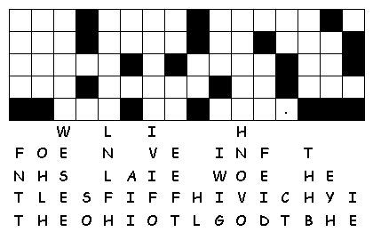

This Week: 1
Kings 21:1-10, (11-14), 15-21a and Psalm
5:1-8 or 2
Samuel 11:26-12:10, 13-15 and Psalm
32,
Galatians
2:15-21, Luke
7:36-8:3
Middle-School Pew-work
Who
or what has helped your faith to grow?
________________________________________________________________________
________________________________________________________________________
________________________________________________________________________
________________________________________________________________________
________________________________________________________________________
________________________________________________________________________
________________________________________________________________________
|
CHRIST CRUCIFIED FAITH FLESH FORBID GENTILES GOD JESUS JEWS JUSTIFIED LAW MINISTER RIGHTEOUSNESS SINNERS SON TRANSGRESSORS T R A N S G R E S S O R S |
|
|
Created by Puzzlemaker at DiscoverySchool.com |
Next week: 1 Kings 19:1-4, (5-7), 8-15a and Psalms 42 and 43 or Isaiah 65:1-9 and Psalm 22:19-28 Galatians 3:23-29 Luke 8:26-39